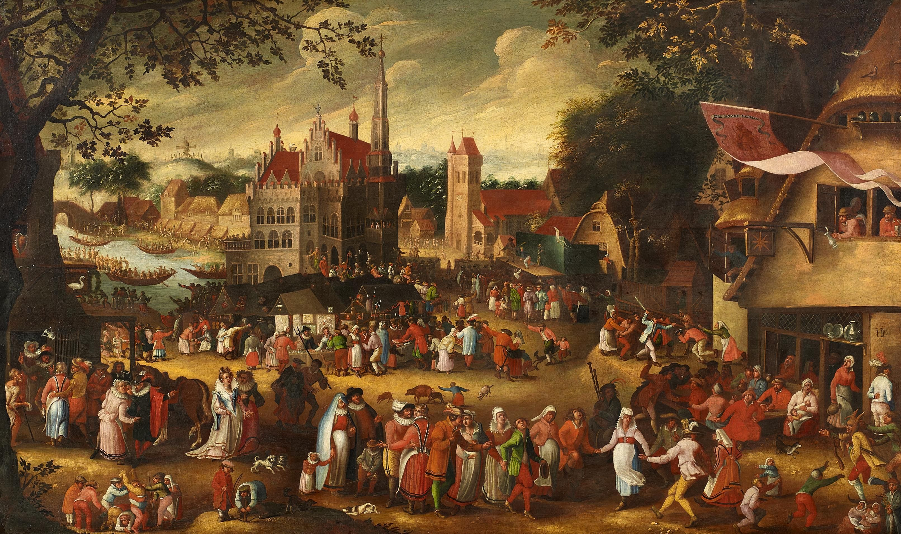
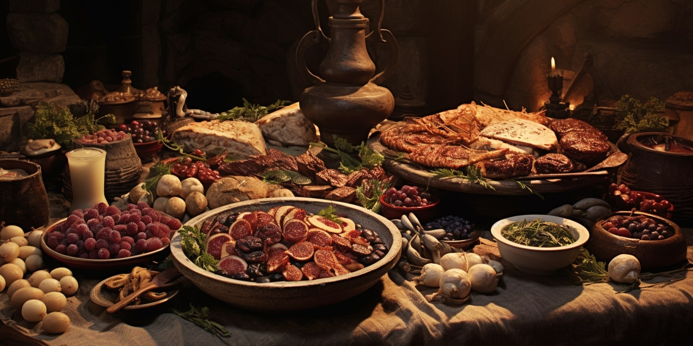

Hearken, fair reader, and lend thine ear to this humble account. My name is Anthony Palazio, a scholar devoted to the intricate arts of cyber security and the weaving of networks unseen, pursuits undertaken at the esteemed halls of the New England Institute of Technology. In this present season of my studies, I find myself in the third quarter of my journey, having traversed trials of logic, code, and craft, each more demanding than the last. This very page upon which thou gazest stands as a creation of mine own hand, forged in the discipline of HTML, a testament to the knowledge I have thus far gathered.
In this age of glowing screens and invisible currents of information, I train to become both guardian and architect—one who shields the gates of digital realms and ensures that the pathways between them remain secure and unbroken. Though such work may seem arcane to some, I take great pride in mastering its mysteries, much like a scribe of old who carefully inscribed sacred texts, knowing that each symbol bore weight and purpose.
Yet, I am not solely bound to my scholarly pursuits. When the labors of study grow wearisome, I turn to diversions that bring both joy and inspiration. Chief among these is my fondness for the playing of video games, those curious enchanted worlds wherein one may embark upon quests, face formidable trials, and uncover hidden truths. Of all such adventures, I hold a particular affection for a game known as The Binding of Isaac, a tale both dark and whimsical, filled with challenge and discovery.
Beyond the realm of games, I possess a deep love for the art of drawing. From a young age, I found delight in putting form to imagination, bringing forth images from the recesses of my mind onto parchment and page. In recent times, I have taken up the tools of digital artistry, learning to wield stylus and screen as once I did pencil and paper. This new medium has opened many doors, granting me the power to refine my craft and explore styles and techniques that were once beyond my reach.
Furthermore, I take great pleasure in the culinary arts, a passion cultivated over three years of dedicated study in the kitchen. In those days, I learned to prepare a wide array of dishes, each requiring precision, creativity, and care. Cooking, to me, is both science and art—a delicate balance of flavors, textures, and timing.
Thus, I stand as a student of many crafts—guardian of digital domains, explorer of virtual worlds, creator of art, and maker of meals. Though my path is yet unfolding, I remain steadfast in my pursuits, ever eager to learn, to create, and to improve. May this humble introduction serve as a glimpse into my journey, and may the road ahead be filled with knowledge, challenge, and triumph.

One of my painting I created (Circa 878)
- Hill Roberst Elementary-School
- Coelho Middle-School
- Attleboro High-School
- Video games
- Drawing
- Cooking

A buffet of food for the peasents